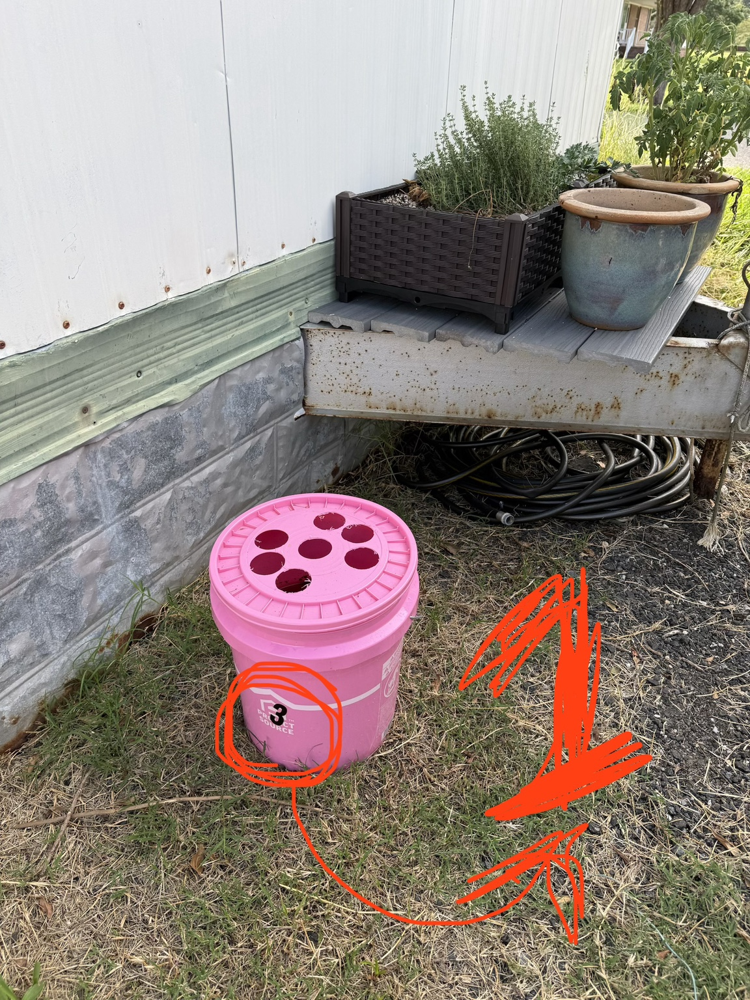
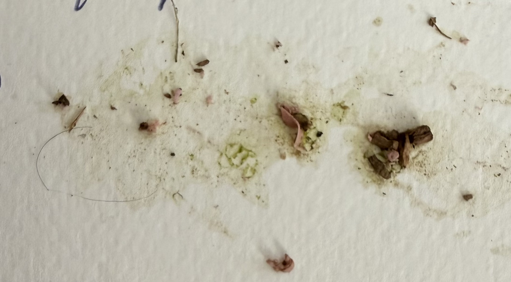
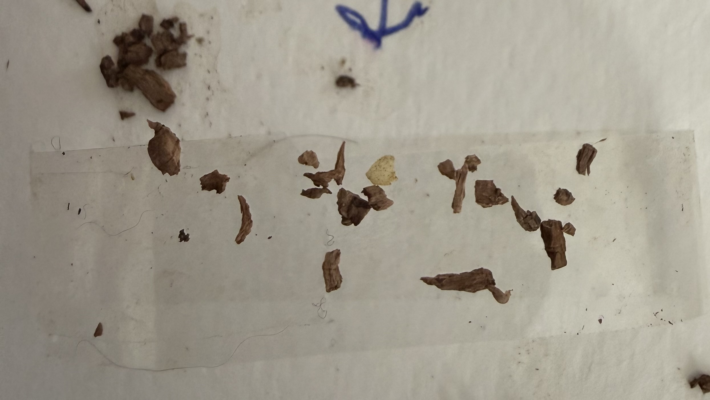
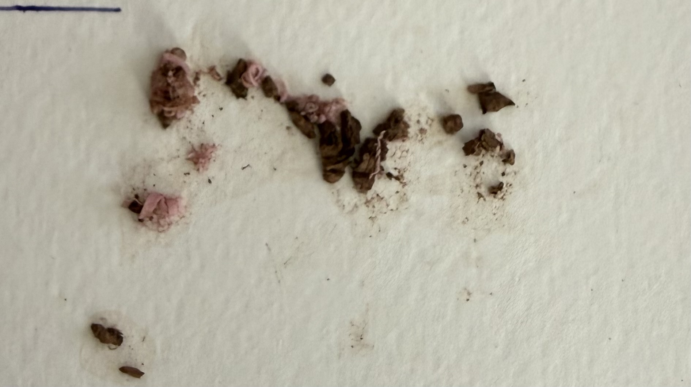
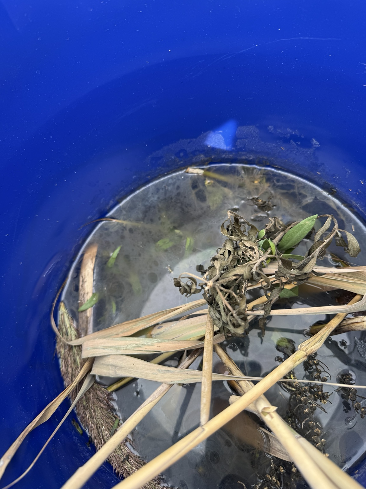
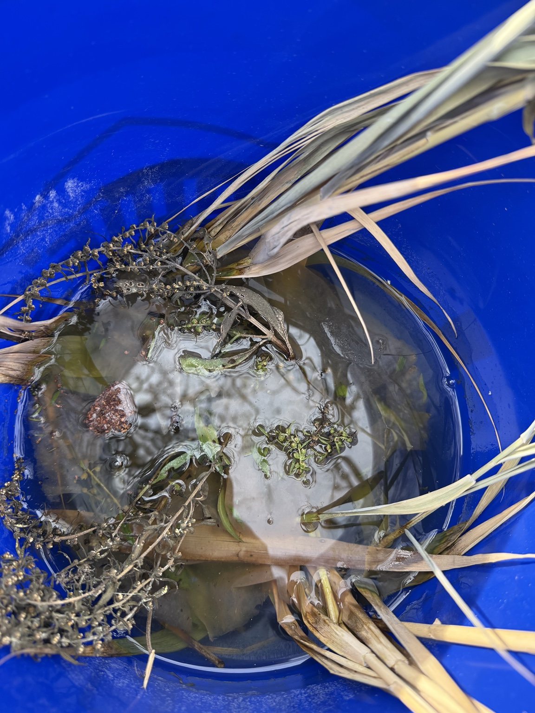

Three weeks in,
the buckets start talking.
The first major inspection checkpoint gave us no slam-dunk answer about mosquito eggs or larvae. It did give us something better: a baseline, two distinct study sites, two dramatically different recipes, and a much clearer idea of what we need to measure next.
What we set out to do
Six pink Bti dunk buckets were installed across two adjoining residential properties on August 7. Each pink bucket has a lid with five 2-inch round openings. The basic idea was simple: create standing water that might appeal to egg-laying mosquitoes, but treat it with Bacillus thuringiensis israelensis (Bti) so feeding mosquito larvae cannot successfully develop into adults.
The pink buckets began with about three gallons of water, roughly two liberal handfuls of weathered oak leaves, and one whole mosquito dunk. They are Pink B0, B1, B3, B4, B5 and B6. Four sit on one property and two on the neighboring property.
Correction preserved in the record: the physical bucket now designated Pink B1 was originally marked “3” and later corrected to “1.” We are keeping both photographs so future readers can see exactly how the numbering confusion happened.


Location is now part of the experiment.
Residential-area layout
Pink B3 is at the picnic-table area; Pink B6 is by a tree; Pink B0 is in the area where mosquito biting is routinely experienced; Pink B4 is near the hen house. Pink B1 and B5 sit on the adjoining property.
Measured distances in the main cluster: B5–B3 94 ft; B5–B6 92 ft; B3–B6 42 ft; B3–B0 60 ft; B6–B0 40 ft.
Roadfront to marshfront
Blue B6 is on the northwest side of the Community Center toward the roadfront side. Blue B4 is southeast of the parking lot toward the marshfront side.
The property is angled, so roadfront/marshfront are more useful field references than pretending the site aligns perfectly with the compass.
Water depth gave us our first clean comparison.
| Pink bucket | Water depth | Field context | Scrape result |
|---|---|---|---|
| B0 “Ground Zero” | 8" | Closest to the area where biting is routinely experienced. Adult mosquitoes were observed buzzing around the bucket during inspection and the observer was bitten. | Inconclusive |
| B1 | 7" | Adjoining property; corrected bucket ID. | Inconclusive |
| B3 | 2.5" | Picnic-table area. Previously knocked over by Finn; substantial water loss. | Inconclusive |
| B4 | 4" | Near hen house. Previously about 9"; knocked over after Izzi’s leash wrapped around it. | Inconclusive |
| B5 | 8" | Adjoining property. Heavy organic debris; good translucent tea color; dunk present in pieces. | Inconclusive |
| B6 | 8" | Tree area; no major water-loss event recorded at this inspection. | Inconclusive |
“Inconclusive” means no mosquito egg or larva was positively identified from the scrape photographs. It does not mean eggs or larvae were proved absent.
Ground Zero is worth watching.
Pink B0 sits closest to the outdoor area where mosquito biting is routinely experienced. During the August 29 inspection, adult mosquitoes were observed buzzing around the bucket and the observer was bitten.
Important: that does not prove B0 attracted those mosquitoes. It tells us that adult mosquito activity was present at that location at the time of inspection. That makes B0 especially useful for continued observation.
The scrape test was useful because it failed.
Craft tongue depressors were used to scrape material from the inside of the pink buckets, and tape was used to transfer or hold the material against a light background for photographs. The samples contained leaf fragments, fine organic debris and other ambiguous material, but no mosquito egg or larva could be positively identified.
The lesson is methodological: “none identified” is not the same as “none present.” The first scrape method is not sensitive or standardized enough to support a strong conclusion about oviposition.



Then the blue buckets arrived.
Southeast of the Community Center parking lot
Installed August 22. Blue bucket with four 2-inch round lid openings, roughly ⅓ to ½ bucket of water initially, about ¼ dunk, and a large quantity of freshly cut marsh vegetation. After seven days: roughly half full, distinctly stinky and scummy.

Northwest side of the Community Center
Installed August 22 with the same general recipe: blue bucket with four 2-inch round lid openings, about ¼ dunk, and a very heavy vegetation load. After seven days: about one-third full, strong decomposition odor and heavy surface scum.

These are not a controlled single-variable test. Bucket color, lid design, vegetation quantity, vegetation type, Bti dose and location all differ from the pink group. But they give us an extremely useful practical comparison: mild oak-leaf infusion versus aggressive fresh-marsh-vegetation fermentation.
What the Bti label changed for us
The original pink-bucket recipe used one whole mosquito dunk per bucket. Current EPA labeling for DUNKS® doses the product by surface area of standing water, not water depth. The 2026 label calls for ¼ dunk for 0–25 square feet of standing-water surface and says to allow a minimum of 48 hours for control. It also notes that some larvae may partially develop before dying.
That means the whole dunk in each small pink bucket was more Bti than the normal labeled rate requires. We are not rewriting history: the higher-dose pink buckets remain part of the original experiment. Future bucket recipes will follow the label.
What we can say after Report #1
We have not yet proved that the pink buckets are effective mosquito attractants.
We also have not proved that they are ineffective.
No living larvae were positively identified at this checkpoint. Because Bti is intended to kill susceptible feeding larvae, the absence of visible wrigglers cannot by itself tell us whether females avoided the buckets or used them and their offspring died before inspection. Our first egg-detection method was too crude to resolve that ambiguity.
What changes now
1. Measure water depth
Record inches of water before any refill or adjustment. Water depth is now part of every bucket’s history.
2. Observe before stirring
Watch quietly first for active wrigglers, sluggish larvae, motionless suspected larvae, pupae or egg rafts.
3. Improve egg detection
Develop a removable, consistent oviposition surface rather than scraping dirty bucket walls after the fact.
4. Track odor
Add a simple odor score so the mild pink infusion and fermenting blue recipe can be compared over time.
5. Keep site identity
Record every observation as Pink or Blue plus bucket number. Duplicate numbers now exist at different study sites.
6. Ask the real question
Are mosquitoes actually choosing these buckets to lay eggs, and if so, which recipe and location get chosen more often?
Sources & label notes
EPA pesticide label for DUNKS® (EPA Reg. No. 6218-87, label dated Feb. 11, 2026): dosage by surface area, ¼ dunk for 0–25 sq. ft., up to 30 days of suppression under labeled conditions, and a minimum 48 hours for control. Summit Responsible Solutions product information describes Bti as being ingested by mosquito larvae and the product as a slow-release treatment.
EPA label • Manufacturer product information
This project is educational citizen science, not public-health or pesticide-application advice. Always follow the product label and applicable local guidance.